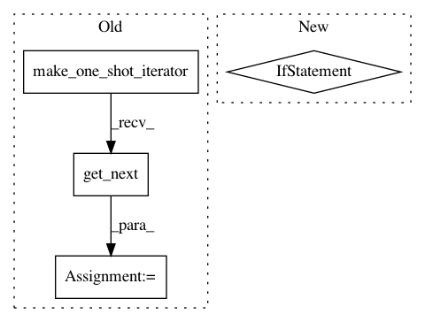

28f6dbec4bee2572fa7f94445d63cebb2de6dc9b,bin/tfr_hdf5.py,,read_tfr,#Any#Any#,93
Before Change
dataset = dataset.batch(1)
dataset = dataset.map(parse_proto)
iterator = dataset.make_one_shot_iterator()
next_op = iterator.get_next()
seqs_1hot = []
targets = []
After Change
si = 0
for seq_1hot, targets1 in dataset:
// TEMP!
if si % 2 == 0:
seq_1hot = seq_1hot.numpy()[0].astype("uint8")
targets1 = targets1.numpy()[0].astype("float16")
seq_1hot = seq_1hot.reshape((-1,4))
targets1 = targets1.reshape((-1,num_targets))
seqs_1hot.append(seq_1hot)
targets.append(targets1)
si += 1
seqs_1hot = np.array(seqs_1hot, dtype="uint8")
targets = np.array(targets, dtype="float16")
In pattern: SUPERPATTERN
Frequency: 3
Non-data size: 4
Instances
Project Name: calico/basenji
Commit Name: 28f6dbec4bee2572fa7f94445d63cebb2de6dc9b
Time: 2019-09-27
Author: drk@calicolabs.com
File Name: bin/tfr_hdf5.py
Class Name:
Method Name: read_tfr
Project Name: tensorflow/tpu
Commit Name: 080700865e68f22295b296e097032baa89231d99
Time: 2018-04-13
Author: huangyp@google.com
File Name: models/official/resnet/imagenet_input.py
Class Name: ImageNetInput
Method Name: input_fn
Project Name: tensorflow/tpu
Commit Name: e564f327a77284d4d3a349221af6511c7c65ad98
Time: 2018-07-31
Author: rsopher@gmail.com
File Name: models/official/retinanet/dataloader.py
Class Name: InputReader
Method Name: __call__